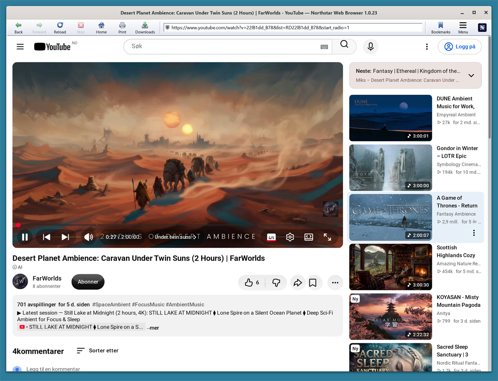

Nordstjernen 웹 브라우저
Nordstjernen은 C로 처음부터 작성된 웹 브라우저로, HTML 및 CSS 표준 지원에 중점을 둡니다. Windows, macOS, Linux에서 실행되며 Android, FreeBSD, NetBSD, JVM용 빌드도 제공됩니다. Nordstjernen은 노르웨이에서 만들어졌습니다.


Nordstjernen 1.0.47 출시 — 안전한 Rust로 작성한 자체 HTML5 파서, 힙을 강화한 QuickJS, PDF.js 뷰어, SVG SMIL 애니메이션. 릴리스 노트 »
Northstar 1.0.23 출시 — SVG SMIL 애니메이션, Windows 디스플레이 배율 조정, 보안 수정. Northstar 소개 · 릴리스 노트 »
Southstar 1.0.9 출시 — 순수 Java 셸, SVG SMIL 애니메이션, 그리고 보안 감사에서 지적된 모든 문제의 수정. Southstar 소개 · 릴리스 노트 »
HTML 표준. 동작은 다른 브라우저가 아니라 명세 본문을 기준으로 절 단위로 검증합니다. WHATWG HTML 명세 항목 중 141개를 완전히 구현했고 31개는 부분 구현했으며, 구현되지 않은 항목은 없습니다. 통과율은 91.5%로, Web Platform Tests의 html/, dom/, url/ 하위 테스트 기준이며 css/는 73.2%입니다(2026년 10월 기준) — 자세한 내용은 docs/HTML-compatibility.md를 참고하세요.
보안. 각 탭은 저마다 샌드박스된 렌더러 프로세스에서 실행됩니다 — Linux에서는 seccomp + Landlock, macOS에서는 Seatbelt 프로필, Windows에서는 프로세스 완화 정책을 사용합니다. JavaScript 엔진과 WebAssembly 엔진 어디에도 JIT가 없습니다.
미니멀리즘. 코어 엔진은 포함된 외부 라이브러리와 생성된 리소스를 제외하면 프로젝트 자체의 C 코드와 헤더로 약 268,000줄입니다 — 한 사람이 처음부터 끝까지 읽고 감사할 수 있을 만큼 작습니다.
강력한 기능. 안전한 Rust로 작성한 자체 HTML5 파서, 힙을 강화한 QuickJS, WebAssembly, WebGL 1 & 2와 WebGPU, Service Workers, Streams를 갖췄습니다. 인라인 <video> — MPEG-1, WebM, 그리고 운영체제의 디코더를 통한 MP4 — 는 HLS, DASH, 자막을 지원하며, SMIL 애니메이션을 지원하는 SVG, MathML, PDF.js 뷰어도 제공합니다.
자동화. nordstjernen --mcp를 사용하면 로컬 에이전트가 창을 읽고 조작할 수 있으며 — 허용하기 전까지는 꺼져 있고, 루프백 전용이며, 토큰으로 인증합니다 — --webdriver는 Selenium 등 테스트 프레임워크를 위해 W3C WebDriver를 제공합니다. 브라우저 자체에는 AI 어시스턴트가 없습니다.
인쇄. Ctrl+P를 누르면 @media print, @page, 페이지 나눔에 따라 페이지를 나눈 뒤 운영체제 고유의 인쇄 대화 상자로 넘깁니다. --dump=print:FILE을 사용하면 프린터 없이도 같은 페이지를 PDF로 저장할 수 있습니다.
빠른 속도. 트리 내에서 관리하는 Pango 포크인 web-text-lib은 셰이핑된 텍스트를 여러 레이아웃에 걸쳐 캐시하여, 표가 많은 페이지에서 레이아웃 시간을 24% 줄입니다. HTTP/3 업그레이드는 연결 시간 초과로 멈추는 대신 alt-svc 캐시를 거치므로, Acid3가 15.5초가 아닌 2.2초 만에 로드됩니다.
개인정보 보호. 텔레메트리도, 업데이트 확인 요청도 없으며, 클라이언트 힌트에는 Chrome이 아닌 Nordstjernen이라고 표시됩니다. 서드파티 쿠키는 차단되고, 링크의 추적 매개변수는 제거되며, 세이프 브라우징은 Google에 4바이트 해시 접두사만 보낼 뿐 주소는 절대 보내지 않습니다.
자유 소프트웨어. 1.0.28부터 Nordstjernen은 이중 라이선스로 제공됩니다. GNU GPL 버전 3 이상 또는 Nordstjernen Source License 1.0 중 원하는 쪽을 선택하여 사용, 수정, 재배포할 수 있습니다.
Northstar 브라우저
Northstar는 Nordstjernen의 미니멀한 형제 브라우저로, GNU GPL 버전 3 이상으로 배포됩니다. 하나의 창, 하나의 페이지, 하나의 프로세스로 이루어져 있으며, 같은 클린룸 엔진을 바탕으로 약 219,000줄의 독자적인 C 코드로 만들어졌습니다. 탭, 탭별 렌더러 프로세스, WebGL, WebGPU는 빠졌지만 스트리밍 동영상, 인쇄, WebExtensions, Google 세이프 브라우징, 40개 언어로 된 UI는 그대로 갖추고 있으며, Linux에서는 Landlock 및 seccomp 샌드박스 안에서 실행됩니다. Linux, macOS, Windows에서 실행되며, Windows용은 Microsoft Store에서 받을 수 있습니다.
Northstar 전체 문서 읽기 » · 세 브라우저의 차이는 아래 비교표에서 확인하세요.
Southstar 브라우저
Southstar는 Nordstjernen을 계속 동작하는 상태로 유지하면서 모듈 단위로 Rust로 옮긴 브라우저입니다. 2026년 10월부터 자체 코드는 모두 Rust이며 — 약 163개 크레이트에 약 385,000줄 — Cargo만으로 빌드됩니다. 페이지의 JavaScript는 Boa에서 실행되는데, Boa는 JIT 없이 test262를 모두 통과하는 Rust 인터프리터이며, HTML 파싱, 텍스트 레이아웃, TLS, WebAssembly도 Rust로 구현되어 있습니다. Southstar 1.0.9는 Microsoft Store와 crates.io에서 받을 수 있고, Linux 패키지는 GitHub에 있습니다. 포팅 과정은 docs/rust-port.md에 정리되어 있습니다.
Nordstjernen 웹 브라우저의 혁신에 대해 더 알아보세요.
사양
세 개의 브라우저, 하나의 클린룸 엔진 계보. Nordstjernen은 멀티탭을 지원하는 대표 브라우저이고, Northstar는 GPL 라이선스의 미니멀한 단일 프로세스 에디션이며, Southstar는 같은 브라우저를 Rust로 다시 작성한 것입니다.
표를 옆으로 밀면 세 브라우저를 모두 볼 수 있습니다.
| Nordstjernen 1.0.47 | Northstar 1.0.23 | Southstar 1.0.9 | |
|---|---|---|---|
| 버전 | 1.0.47 — 2026년 11월 14일 출시 · 릴리스 노트 | 1.0.23 — 2026년 11월 14일 출시 · 릴리스 노트 | 1.0.9 — 2026년 11월 14일 출시 · 릴리스 노트 |
| 성격 | 대표 브라우저 · 멀티 창, 멀티탭 | 미니멀 에디션 · 창마다 한 페이지, 탭 없음 | Rust 버전 · 멀티 창, 멀티탭 |
| 언어 | C · 약 268 kLOC 클린룸 코드 · 1.0.47부터 HTML5 및 URL 파서는 안전한 Rust · GTK 4 셸 · JNI를 통한 Java/JVM 바인딩 · 완전히 감사 가능 | C · 약 219 kLOC 독자 코드 · GTK 4 셸 · 완전히 감사 가능 | Rust · 약 163개 크레이트에 약 385 kLOC · Cargo로 빌드 · GTK 4 셸, 1.0.9부터는 순수 Java Swing 셸도 제공 · C는 링크하는 시스템 라이브러리에만 있음 |
| 아키텍처 | 탭별 프로세스 — 각 탭이 저마다 샌드박스된 렌더러 프로세스에서 실행, IPC + 공유 메모리 타일 | 단일 프로세스 — 페이지 엔진이 브라우저 프로세스 안의 별도 스레드에서 실행 | 탭별 프로세스 — 각 탭이 저마다 샌드박스된 렌더러 프로세스에서 실행, IPC + 공유 메모리 프레임버퍼 |
| javascript | 트리 내에서 관리하는, 힙을 강화한 Fabrice Bellard의 QuickJS 포크, 1.0.47부터 기본값 — 바이트코드 인터프리터, JIT 없음, 힙은 예약된 주소 범위의 격리 공간(케이지) 안에 위치 · Temporal 및 Intl · 트리 내 quickjs-ng 포크는 -Dquickjs=quickjs-ng로 선택 가능 |
quickjs-ng 0.18.0+ (147d01c) — 바이트코드 인터프리터, JIT 없음 · 원본 QuickJS는 -Djs_engine=quickjs로 선택 가능 |
Boa (트리 내 포크) — Rust 인터프리터, JIT 없음 · staging을 제외한 test262 테스트 52,133개 모두 통과 |
| 플랫폼 | linux (gtk) · alpine (musl) · windows · macos · android · java/jvm · npm 및 pip · freebsd · netbsd | linux · macos · windows | linux · windows · macos · freebsd · netbsd · java/jvm · npm 및 crates.io |
| 라이선스 | 1.0.28부터 이중 라이선스, 선택 가능: GNU GPL v3 이상 — 자유 소프트웨어 · 또는 NSL-1.0 → 10년 후 MIT로 전환, Functional Source License에서 영감을 받음 | GNU GPL v3 이상 — 자유 소프트웨어 | Nordstjernen과 같은 이중 라이선스: GNU GPL v3 이상 또는 NSL-1.0 중 선택 가능 |
전체 사양 » — HTML 및 CSS, 텍스트, 이미지, 미디어, 인쇄, 네트워크, 보안 강화, 개인정보 보호, 표준.
다운로드
최신 릴리스: Nordstjernen 1.0.47, 2026년 11월 14일 출시. 모든 플랫폼용 빌드와 Northstar, Southstar는 다운로드 페이지에 있습니다.
| Windows | Microsoft Store |
|---|---|
| Android | Google Play |
| macOS | nordstjernen-1.0.47-macos-arm64.dmg |
| Debian 13 | nordstjernen_1.0.47_debian13_amd64.deb |
| Ubuntu 26.04 | nordstjernen_1.0.47_ubuntu26.04_amd64.deb |
| Fedora 45 | nordstjernen-1.0.47-1.fc45.x86_64.rpm |
| Linux (포터블) | nordstjernen-1.0.47-linux-x86_64.zip |
| 소스 코드 | 1.0.47.tar.gz |
언어
English · 中文 · हिन्दी · Español · Français · العربية · বাংলা · Português · Русский · اردو · Bahasa Indonesia · Deutsch · 日本語 · Kiswahili · मराठी · తెలుగు · Türkçe · தமிழ் · Tiếng Việt · 한국어 · Norsk